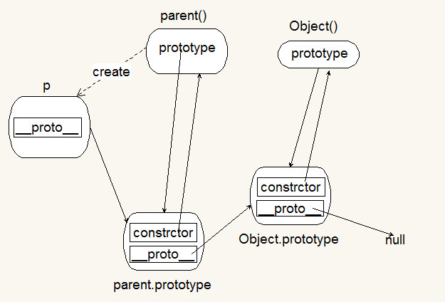
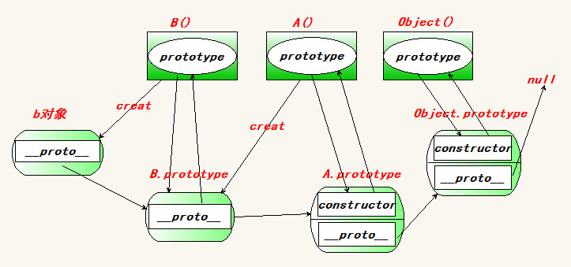

继承的实现方式
基于原型
1.扩展原型：在原有的原型上进行相应的扩展，实现继承。
代码：
1 2 3 4 5 6 7
| function A(){}; var a = new A; A.prototype.printA = function() { console.log('123'); }; a.printA();// 123 在A的原型上扩充了打印a的函数操作 a是基于A的原型 所以新创建的a 具有A的原型属性 // a -> A.prototype
|
2.置换原型：将要被继承的对象，直接替换掉原有的原型，实现继承
代码：
1 2 3 4 5 6 7 8 9 10 11 12 13 14 15 16 17 18 19
| function parent() { this.name = 'tom'; } parent.prototype.printC = function() { console.log('c'); console.log(this.name); }; function child() { } child.prototype = new parent; var c = new child; c.printC(); // c tom // c -> parent实例（new parent） -> parent.prototype var name = new child; var name = [1, 2, 3]; console.log(typeof name); // 全局变量都是window对象的属性 // window的name属性只能为字符串
|
拷贝继承
将指定对象上的所有成员拷贝一份，并添加到当前对象上。
动态特性：依次枚举每一个对象实例 然后添加给自身 有的话 顶替 没有的话 通过“.”和“[]”添加属性和方法。
代码：
1 2 3 4 5 6 7 8 9 10 11 12 13 14 15 16 17 18 19 20 21 22 23 24
| var parent = { print: function() { console.log('i am ' + this.name); }, name: 'parent' }; var child = { name: 'child' }; // 1: 遍历parent for (var k in parent) { // 2: 将parent对象上的成员添加到child上。 child[k] = parent[k]; } child.print(); var parent1 = { print1: function() { console.log('print1'); } }; for (var k in parent1) { // 2: 将parent对象上的成员添加到child上。 child[k] = parent1[k]; }
|
extend方法的实现（封装）
为了方便实现拷贝继承
代码：
1 2 3 4 5 6 7 8 9 10 11 12 13 14 15 16 17 18 19 20 21 22 23 24 25 26 27 28 29 30 31 32 33 34 35 36 37 38 39 40 41 42 43 44
| // 1: 一次只能继承一个对象 var child = {}; child.extend = function(parent) { var k; for( k in parent ){ this[k] = parent[k]; } }; child.extend({ name: 'child', print: function() { console.log(this.name); } }); child.print(); // 2: 一次实现继承多个对象 child.extend = function() { var args = arguments,//简写arguments，方便代码书写 obj; // 遍历arguments上的所有对象，依次将遍历的每个对象的成员添加到child。 for( var i = 0, l = args.length;i < l; i++){ obj = args[i];//缓存当前实参数据、可以提高js解析性能 if( typeof obj === 'object'){ // 判断传入的是否为对象，不是对象就不执行下面代码 for( var k in obj ){//枚举 this[k] = obj[k];//this代表调用者（child） } } } }; child.extend({ name: 'child' }, { print: function() { console.log('i am ' + this.name); } }); child.print();
|
对象冒充
在一个构造函数中，可以动态的添加一个parent方法，指向已有的构造函数，然后掉用parent方法去实例化当前对象的一部分成员（或全部成员）
注意：利用完parent属性之后，记得删除该属性
代码：
1 2 3 4 5 6 7 8 9 10 11 12 13 14 15 16
| function parent(name, age, gender) { this.name = name; this.age = age; this.gender = gender; } function child(name, age, gender, address) { this.parent = parent; this.parent(name, age, gender); delete this.parent; this.address = address; } var c = new child('xiaoming', 20, 'girl', 'china'); console.log(c);
|
ES5提供的一个Object.create
通过置换原型的方式来实现继承
1 2 3 4 5 6 7 8 9 10 11 12 13 14 15 16 17 18 19 20 21 22 23 24 25 26 27 28 29 30 31 32 33
| // 基于原型：置换原型 //Object.create(parent); 返回一个对象，并继承自parent var obj = { name: 'tom', print: function() { console.log(this.name); } }; var newobj = Object.create(obj); // newobj.__proto__.age = 18; var newnewobj = Object.create(obj); newobj.print(); console.log(newobj); console.log(newnewobj); 兼容问题： if( !Object.create ){ Object.create = function(parent) { function F() {} F.prototype = parent; return new F; } } var newobj = Object.create({ name: 'tom', print: function() { console.log(this.name); } }); newobj.print();
|
原型链的概念
从当前对象到Object.prototype之间，存在一条层次分明，逐级递进的体现继承关系的链式结构
1.几个默认
- 所有对象都有prtotype属性，这个属性引用他的原型对象。
- 原型对象继承自Object.prototype,具有constrctor属性；如果置换了原型，记得要添加constructor属性。
- 只有函数具有prototype属性（除了Function.prototype）。
代码：
1 2 3 4 5 6 7 8 9 10 11
| var o = {}; // Object console.log(o.constructor === Object); // Object.prototype // __proto__ console.log(o.__proto__); // o -> Object.prototype -> null console.log(o.__proto__.__proto__); console.log(Object.prototype.__proto__); // null // Object.prototype -> null // Object对象的继承层次： // obj -> Object.prototype -> null
|
2.核心
属性搜索原型
当访问对象成员时，
- 首先，在当前对象上查找constrctor，如果找到就直接返回（调用），停止查找;
- 如果没有找到，就向其原型对象上查找；如果找到就直接返回（调用），停止查找;
- 如果没有找到，就继续向原型对象的原型对象上查找，直到Object.prototype；
- 如果找到，那么就直接返回（调用），并停止查找；否则返回undefined（报错：xxx is not a function）
注意：
- 如果访问对象的某个属性不存在的话，会搜索整个原型链。会导致js性能降低。
- 在实际开发中，尽量保持一个适度的原型链长度。
- 兼顾js性能以及代码的可读性可扩展性。
代码：
1 2 3 4 5 6 7 8 9 10 11 12 13
| function parent() { this.name = '33'; this.age = 66; this.gender = 'women'; } parent.prototype.address = "china"; parent.prototype.__proto__ = { gender: 'lady' }; var p = new parent; console.log(p.name); // 33 console.log(p.address); // china console.log(p.gender); // lady
|
Object.prototype介绍
1.hasOwnProperty()：判断当前对象的指定属性是否为自身的，而不是继承过来的；如果是本身的返回true；否则返回false。
语法: hasOwnProperty(‘propName’)
2.isPrototypeOf()：判断当前对象是否为指定对象的原型对象。
如果是返回true；否则返回false。
如果当前对象出现在指定对象的原型链上就返回true；否则返回false。
语法: isPrototypeOf();
代码：
1 2 3 4 5 6 7 8 9 10 11 12 13 14 15
| function A() { } function B() { } var a = new A; B.prototype = a; var b = new B; console.log(a.isPrototypeOf(b)); // false; console.log( A.prototype.isPrototypeOf(b)); // b -> a -> A.prototype -> Object.prototype -> null console.log(Object.prototype.isPrototypeOf(a)); console.log(Object.prototype.isPrototypeOf(b));
|
3.propertyIsEnumerable：即判断指定属性是否为自身的，并且该属性也是可枚举的。
代码：
1 2 3 4 5 6 7
| var obj = { name: 'tom', age: 18 }; for( var k in obj){ console.log(k); }
|
构造函数的执行过程
为什么this指向当前的实例
1：创建了一个空对象obj；
2：将obj赋值给this（让this指向obj）
3：将当前作用域交给this
4：执行构造函数内部的代码
5：将 this 返回。（return this;）
代码：
1 2 3 4 5 6 7 8 9 10 11 12 13 14 15 16 17
| function Fn(name, age) { this.name = name; this.age = age; } var fn = new Fn('tom', 18); console.log(fn); // 1: 创建了一个空对象obj； // 2：将obj赋值给this（让this指向obj） // 3：将当前作用域交给this // 4：执行构造函数内部的代码 // 5：将 this 返回。（return this;） function Fn(name, age) { var obj = {}; this = obj; // Fn.call(this, name, age); return this; }
|
绘制对象的原型链
绘制规则：
1： 绘制出简化的原型链
2： 先将上述简化的原型链上的每一个对象绘制在图形上。
3：将每一个对象的默认属性添加上。
4：给每一个对象的属性添加指向。
5：如果每一个对象的属性都有了指向，说明原型链绘制完成。
思路：
1 2 3 4 5 6 7 8 9 10
| // object对象 var o = {}; // o -> Object.prototype -> null // 1: 先将上述简化的原型链上的每一个对象绘制在图形上。 // 2：将每一个对象的默认属性添加上。 // 3：给每一个对象的属性添加指向。 // 数组对象 var arr = []; // arr -> Array.prototype -> Object.prototype -> null
|
练习一
1 2 3
| function parent() {} var p = new parent; //p->parent.propotype->Object.prototype->null
|
如下图：

练习二
1 2 3 4 5
| function A() {} function B() {} B.prototype = new A; var b = new B; //b->B.prototype(new A)->A.prtotype->Object.prototype->null
|
